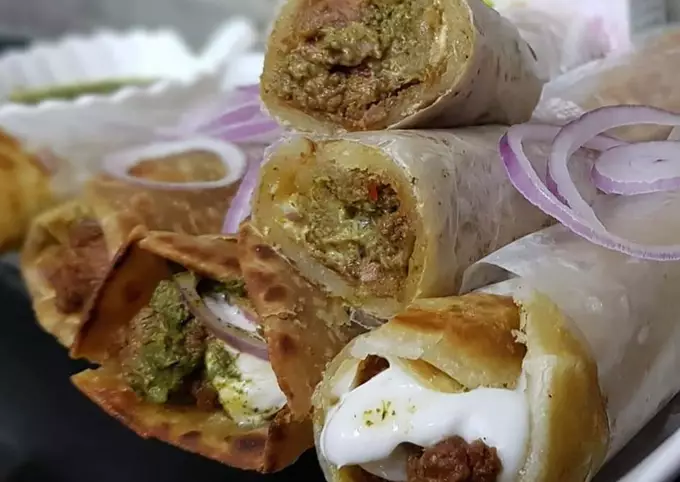

Beef Boti Roll

Don't think you have time to make dinner 🍲 too tired to cook? what to cook jhat phat 🤔 I keep marinated beef /chicken in the freezer for this kind of meal.
Take that portion defrost and cook...wrap in parahta /chapati spread Mayo Garlic, green Chutney, sliced onion rolls are ready 🌯🌮
Ingredients
- 1 kg Beef
- 2 tbsp Ginger Garlic paste
- 3 tbsp Fry crushed onion
- 1/2 Cup yoghurt
- 1 Packet Shan Bihari Masala
- 2 tbsp Raw Papaya paste
- 1/4 cup Mustard oil
- 2 tbsp Lemon juice
For Parahta Dough
- 2 Cup flour (Maida)
- 1/2 Cup Wheat flour (Atta)
- 2 tbsp semolina (Soji)
- 4 tbsp oil
- 1/2 tsp salt
- Ghee for Frying
- For Chutney
- 1/2 Cup Imlli pulp
- 1/4 cup coriander Leaf
- 1 tsp cumin seeds
- 1/2 tsp salt
- 4-5 Button Red chillies
- 1 Garlic clove
Steps
- Mariante beef with all the above ingreidients for 5-6 hours.
- Now in a pan cook meat on medium flame till beef get tender and masala sticks to boti. Give coal smoke in the end.
- Make a dough with above ingredients and Knead the soft dough.
- Cover with wet cloth and leave for 1 hour. Make paratha and fry with 2-3 tbsp Ghee
- Put all the ingredients,Imlli pulp, cumin seeds,salt, coriander Leaf, button red chilli, garlic clove in the blender.blend smooth paste Chutney is ready.
- Now in paratha place bihari boti, chutney, Mayo garlic and onion rings. Make roll and wrap. Delicious rolls are ready😋🙂